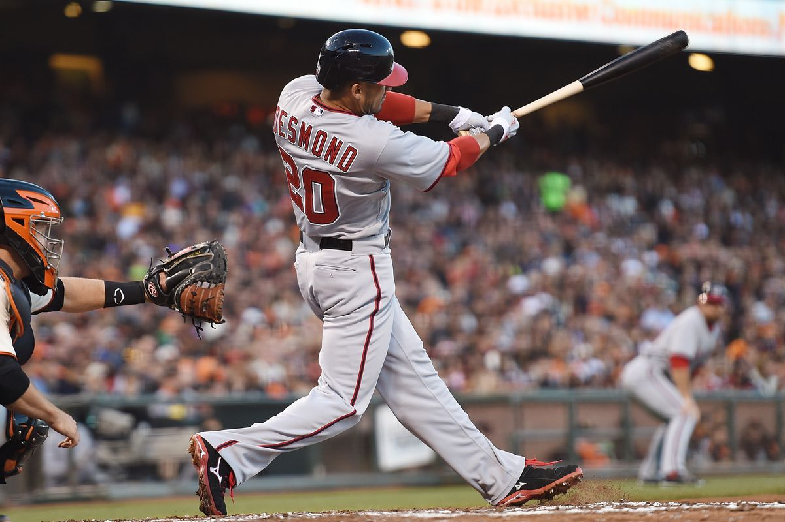
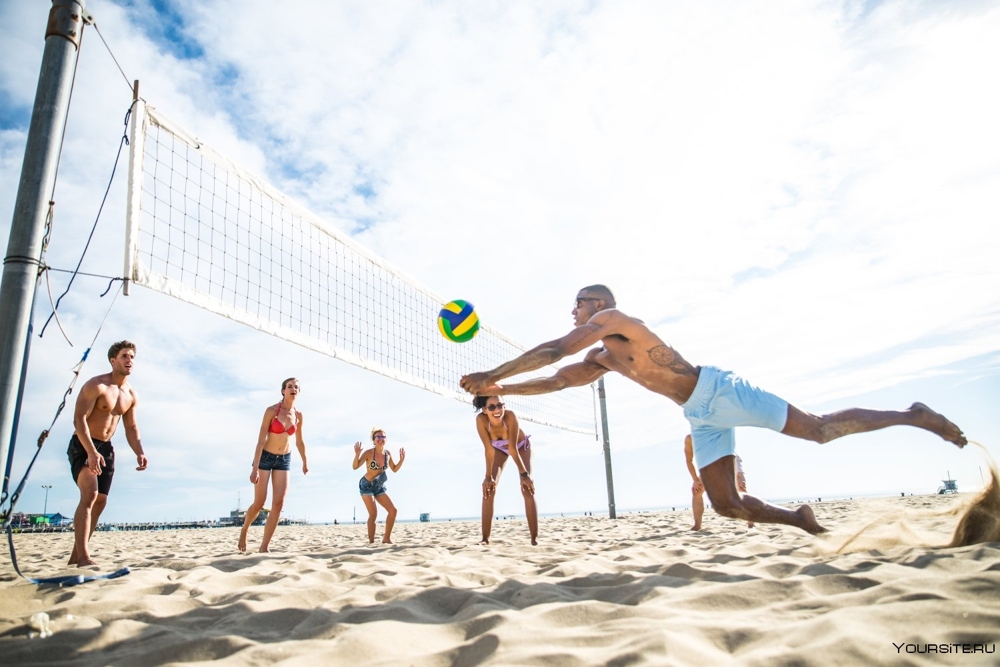

| ~Зима~ | ~Весна~ | ~Лето~ | ~Осень~ |
|---|---|---|---|
     
|
Спортивный отдых осеньюВ зависимости от того, что это за весна, можно ходить в спортзал или бассейн (когда холодно) плюс зимние виды спорта. А если весна более поздняя, то вам могут помочь утренние пробежки, велоспорт (когда снег растаяет). На велосипеде можно даже зимой гонять. Но это опаснее и велик грохается быстрее, чем летом. Откровенно говоря, на велике скользко бывает даже летом в случае дождя. А зимой-весной пока лежит снег я считаю от велопрогулок нужно отказаться. Весна — время, когда природа просыпается от зимней спячки, температура начинает подниматься, и люди стремятся провести больше времени на открытом воздухе. Весенний период также отличается разнообразием видов спорта, которые подходят для этого времени года. Давай рассмотрим несколько популярных весенних видов спорта: Футбол — один из самых популярных видов спорта как во взрослом, так и детском возрасте. Весна отлично подходит для игры в футбол благодаря более теплой погоде. Многие футбольные лиги начинают свои сезоны весной. Весна — время начала сезона для бейсбола и софтбола. Эти виды спорта любят многие, их характеризуют динамика, стратегия и командная работа. Сезон бейсбола и софтбола весной — это отличное время для активных игр и соревнований. Весна — отличное время для занятий легкой атлетикой на стадионах или в парках. Бег, прыжки, метание — все это можно успешно практиковать весной и улучшить свои спортивные навыки. Пляжный волейбол становится популярным видом спорта весной, особенно в тех регионах, где уже тепло. Игра на песке, свежий воздух и активные соревнования делают этот вид спорта привлекательным для многих.  |
     
|
|
|
Мы за спорт! |
Меню |
Автор |
|---|
|
город Гусев, ул. Ульяновых, 2/4, 238050
тел.: 8(40143)33863 |
Зима Весна |
Лето Осень |
|
Издано в 2024г |
|---|